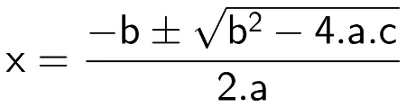
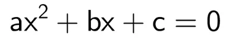
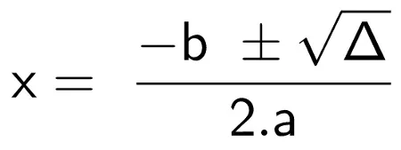
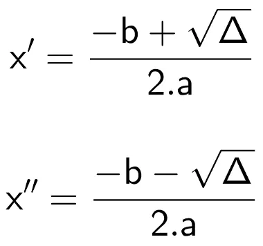

A fórmula de Bhaskara é uma das alternativas para equações do segundo grau,utilizado para encontrar raízes a partir dos coeficientes da equação.A fórmula de Bhaskara é um método resolutivo para equações do segundo grau cujo nome homenageia o grande matemático indiano que a demonstrou. Essa fórmula nada mais é do que um método para encontrar as raízes reais de uma equação do segundo grau fazendo uso apenas de seus coeficientes. Vale lembrar que coeficiente é o número que multiplica uma incógnita em uma equação. Em sua forma original, a fórmula de Bhaskara é dada pela seguinte expressão:
Para fórmula de Bhaskara ser ultilizada, é necessário lembrar que toda equação do segundo grau deve ser escrita da seguinte maneira:
|  | Os coeficientes dessa equação são os números que ocupam o lugar de “a”, de “b” e de “c”. Portanto, o coeficiente “a” é o número que multiplica x2; o coeficiente “b” é o número que multiplica x; e o coeficiente “c” é o número que não multiplica incógnita. |
Discriminante é a expressão presente dentro da raiz na fórmula de Bhaskara. É comumente representado pela letra grega Δ (Delta) e recebe esse nome pelo fato de discriminar os resultados de uma equação da seguinte maneira: Δ > 0, então a equação não possui resultados reais; Δ = 0, então a equação possui apenas um resultado real ou possui dois resultados iguais (essas duas afirmações são equivalentes); Δ > 0, então a equação possui dois resultados distintos reais. Portanto, para calcular as raízes de uma equação do segundo grau, primeiramente calcule o valor numérico de Δ.
Geralmente a fórmula de Bhaskara é ensinada apenas da seguinte maneira
TERCEIRA ETAPA
Para essa última etapa, note na fórmula de Bhaskara que existe um sinal “±”. Esse sinal indica que devem ser realizados dois cálculos. O primeiro para o caso em que o número que o segue seja positivo e o segundo para o caso em que o número que o segue seja negativo. É comum nomear cada um desses resultados como x' e x'' ou x1 e x2. Observe:
Δ=b 2 -4 ac
Δ=122-4 ac -13Δ=192
Tendo em mãos o valor de Δ, realize o segundo passo: x= -b √Δ/2*ax = – 12 ± 14/2
x' = – 12 + 14/2
Portanto, as raízes da equação x2 + 12x – 13 = 0 são 1 e – 13.
1) x 2 -13x +4